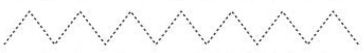
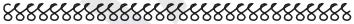

Unit One - Lesson 4: Tracing dots to complete patterns
Lesson 4
Tracing dots to complete patterns
Trace, identify, or describe dotted pattern 1; explore a teacher-provided raised-line version before answering.
Trace, identify, or describe dotted pattern 2; explore a teacher-provided raised-line version before answering.
Trace, identify, or describe dotted pattern 3; explore a teacher-provided raised-line version before answering.

Trace, identify, or describe dotted pattern 4; explore a teacher-provided raised-line version before answering.
Trace, identify, or describe dotted pattern 5; explore a teacher-provided raised-line version before answering.
Trace, identify, or describe dotted pattern 6; explore a teacher-provided raised-line version before answering.
Copy the following patterns in your exercise book.
Copy, identify, or describe pattern 1; explore a teacher-provided raised-line version before answering.
Copy, identify, or describe pattern 2; explore a teacher-provided raised-line version before answering.

Copy, identify, or describe pattern 3; explore a teacher-provided raised-line version before answering.
Copy, identify, or describe pattern 4; explore a teacher-provided raised-line version before answering.
Copy, identify, or describe pattern 5; explore a teacher-provided raised-line version before answering.
Copy, identify, or describe pattern 6; explore a teacher-provided raised-line version before answering.
Copy, identify, or describe pattern 7; explore a teacher-provided raised-line version before answering.